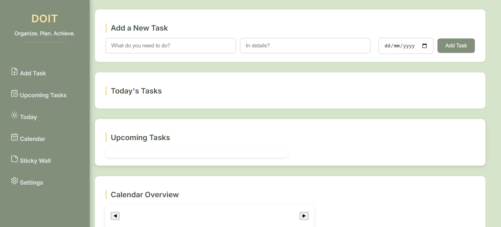

Computer Science student / Builder / Data analysis learner
Rodini Vince Rosario
I build practical mobile and web tools for reminders, habits, tasks, and data-backed workflows.
A BS Computer Science student at the University of Northern Philippines with a 1.32 GWA, a growing stack in Flutter, Firebase, Supabase, SQL, and Python data analysis, and a steady habit of turning coursework into usable projects.
Flutter
Firebase
Supabase
SQL
Python
Pandas
Profile
Quietly disciplined, technically curious, and drawn to tools that make daily life easier.
I am a Computer Science student who learns best by building. My work blends mobile app ideas, database-backed interfaces, data analysis practice, and a personal interest in journaling, mindfulness, and self-improvement.
Stack
Skills grouped by how I actually use them.
A practical mix for building apps, storing data, analyzing information, and communicating work clearly.
Application Interfaces
HTML, CSS, JavaScript, Flutter
Programming Logic
Java, Python, C, SQL
Data and Backends
Firebase, Supabase, relational databases
Analysis Tools
Pandas, NumPy, Matplotlib, data preparation
Selected Work
Projects with a useful, personal, and technical point of view.
A mix of mobile apps, a web project, and visual work presented as selected portfolio pieces.
Mobile app / Firebase
MediTrack
Medication reminder and inventory app with barcode scanning, authentication, and real-time database management.
View project
Mobile app / Habit tracking
WorkMyself
Fitness tracker with daily quotes, journaling, timer support, and progress-oriented routines.
View project
Web project / Supabase
DoIt
Task management website built with HTML, CSS, JavaScript, and Supabase-backed user data.
Ask about project
Photography
Frames and Light
Visual studies from classroom, window, river, and nature photography work.
Open galleryExperience
Latest first, oldest last.
Leadership, writing, and tutoring experiences that shaped how I communicate, organize work, and support other people.
Auditor
Computer Science Society / Vigan City, Ilocos SurMonitored organizational expenses, reviewed financial statements, tracked event budgets, prepared documentation, and helped projects move with accountability.
Opinion Writer
iTech / Vigan City, Ilocos SurWrote opinion pieces on student-centered technology topics and collaborated with peers and editors to sharpen ideas and writing quality.
Freelance Tutor
Self Employed / Caoayan, Ilocos SurProvided one-on-one elementary tutoring during remote learning, taught reading and writing with modular materials, monitored progress, and coordinated with parents.
Education
Bachelor of Science in Computer Science
University of Northern Philippines / 2023 - 2027 / GWA 1.32
Senior High School - STEM, With High Honors
Ilocos Sur National High School / 2021 - 2023
Credentials
Recent certifications and seminars.
Updated from the resume, with emphasis on the newest and most relevant achievements.
Academic Excellence Award (Gold)
CCIT
Data Analysis: Career Preparation
Cognitive Class
Relational Database
freeCodeCamp
Robotics and Automation
Erovoutika
Data Analytics Essentials
Cisco Networking Academy
Data Analysis with Python
freeCodeCamp
Introduction to Data Science
DICT-ITU DTC / Cisco Networking Academy
AI, cybersecurity, HTML, and programming seminars
ASEAN Foundation, Break The Fake Movement, MMSU, Simplilearn, CSS
Services
What I can help build while I keep growing.
Mobile app prototypes
Flutter apps for reminders, tracking, journaling, and structured daily workflows.
Responsive websites
Clean HTML, CSS, and JavaScript interfaces with simple, usable interactions.
Database-backed features
Firebase, Supabase, SQL concepts, and organized data for student-scale apps.
Contact